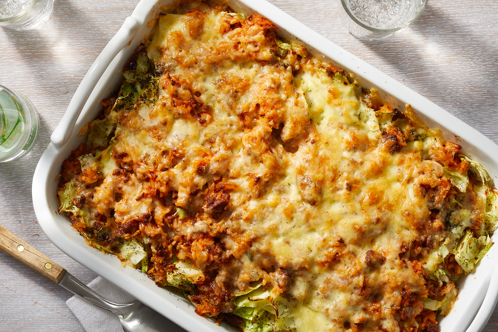

Cabbage Roll Casserole

Description
Cabbage roll casserole is the saucy, satisfying 9x13 dish that will take
your weeknight dinners from boring to bold. Enjoy a casserole dish that
combines seasoned ground beef, chopped cabbage, and fluffy white rice
with tomato sauce and beef broth for a wonderfully cozy bite. Learn how
to make cabbage roll casserole, plus get tips on how to make it your own
and what side dishes to pair it with for a fabulous meal.
Begin by browning ground beef in a skillet over medium-high heat.
Drain and discard grease before combining beef with cabbage, tomato
sauce, onion, rice, and salt. Pour beef broth over the top, and bake
for one hour.
Stir the casserole and bake again for an additional 20-30 minutes, or until the cabbage is tender.
Ingredients
- 2 pounds ground beef
- 3 ½ pounds chopped cabbage
- 1 (29 ounce) can tomato sauce
- 1 cup chopped onion
- cup uncooked white rice
- 1 teaspoon salt
- 2 (14 ounce) cans beef broth
Steps
- Step 1:Boil the macaroni in salted
water until the noodles are al dente. Drain and transfer to a
prepared baking dish.
- Step 2:Heat a large skillet over medium-high heat.
Cook and stir ground beef in the hot skillet until browned and
crumbly, 5 to 7 minutes. Drain and discard grease.
- Step 3:Combine cabbage, tomato sauce, onion, rice,
and salt in a large mixing bowl. Stir in cooked ground beef. Pour
mixture into a 9x13-inch baking dish, then pour beef broth over top.
- Step 4:Cover and bake in the preheated oven for 1
hour. Stir, re-cover, and bake until cabbage is tender and rice is
done, 20 to 30 minutes more.